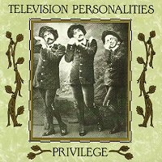

Television Personalities |
 1990 - Fire - FIRE 21 - LP/CD/MC Songs: Paradise Is For The Blessed A Good And Fairthful Servant Conscience Tells Me No My Hedonistic Tendencies All My Dreams Are Dead Salvator Dali's Garden Party The Man Who Paints The Rainbows What If It's Raining? Sad Mona Lisa The Engine Driver Song Sometimes I Think You Know Me Better Than I Know Myself Privilege The Room At The Top Of The Stairs (CD only) This Time There's No Happy Ending (CD only) Part One: Fulfilling The Contractual Obligations (CD only)
The Cast (in order of appearance): Produced by Phil Vinall and The Television Personalities. Recorded at The Old Barn Studios, Croydon and Electrorhythm Studio, Tottenham. Engineered by Matthew Fisher at The Old Barn and Wilson Sharp at Electrorhythm. Funky computer keyboards and programmes by Graham at the Basement Hair Salon, 2A Spencer Walk, Putney, London SW 15 "... can't you feel, deep down, inside yourselves, how contented you will be, how the burdens will be lifted from you, if you only CONFORM? I want you to say it, "I WILL CONFORM". Think of it. Say it to yourself. Say it out loud and don't be ashamed to be heard". "I WILL CONFORM!" (The Reverend Jeremy Tate, 1967) |